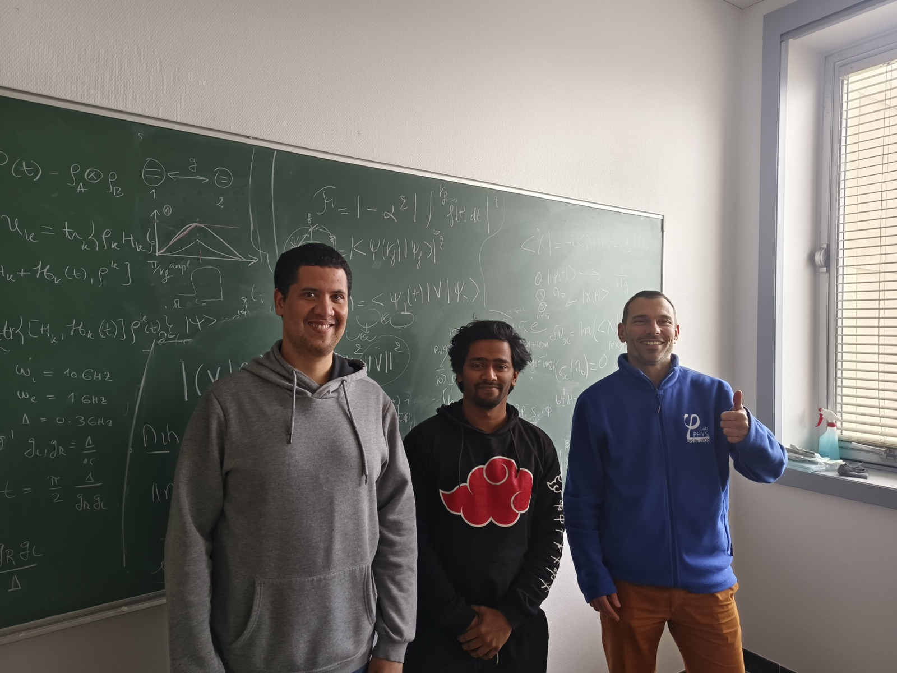

Research environment2024 – 2027
Université de Bourgogne
PhD Candidate · Theoretical Physics
Institut Carnot de Bourgogne (ICB) · Dijon, France · 3-year doctoral fellowship
Working on quantum control theory at ICB Dijon. The central question is how fast, cheap, and robust a quantum gate can be made.
The work uses the Pontryagin Maximum Principle and GRAPE to design energy-efficient protocols with timing constraints and bounded work fluctuations. A separate thread extends this to open quantum systems, where noise and dissipation are part of the problem from the start.